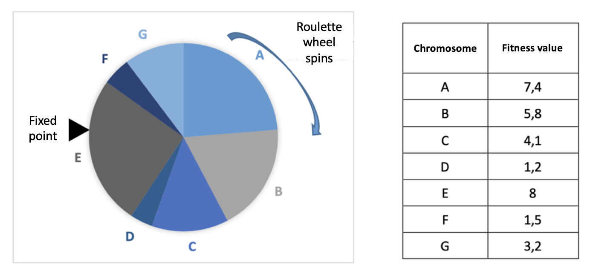

Selection Operators
The pycellga.selection module provides selection operators that determine how individuals are chosen from the population to act as parents in genetic algorithms. These operators play a critical role in balancing exploration and exploitation during the optimization process, directly impacting convergence and diversity.
Selection Mechanism
Selection in genetic algorithms determines which individuals contribute their genetic material to the next generation. The choice of selection mechanism can significantly influence the algorithm’s performance, impacting how quickly the population converges and whether diversity is preserved.
Importance of Selection
Exploration: Encourages searching new areas in the solution space.
Exploitation: Focuses on refining solutions near already known good solutions.
Selection Example
Roulette Wheel Selection
Roulette Wheel Selection resembles the classic roulette wheel game. As shown in the diagram below, each chromosome occupies a portion of the wheel proportional to its fitness value. After a fixed point on the wheel is chosen, the roulette wheel is spun. The individual whose section aligns with the fixed point is selected. The higher the fitness value of an individual, the greater their chance of being chosen.
{kind=link}
Figure 1: An example of Roulette Wheel Selection.
API References
The following sections provide detailed documentation for the selection operators available in the pycellga.selectlon package.
Tournament Selection
Implements a tournament selection method, where a subset of individuals competes, and the best-performing individual is selected as a parent. This method is useful in maintaining diversity and is effective in multimodal optimization landscapes.
- class TournamentSelection(pop_list: List[Individual] = [], c: int = 0, K: int = 2)[source]
Bases:
SelectionOperatorTournamentSelection performs a tournament selection on a population of individuals to select parent individuals for crossover.
- Parameters:
pop_list (list of Individual) – The population of individuals to select from.
c (int) – The index of the individual to start selection from.
K (int) – The number of individuals to be chosen at random from neighbors.
- __init__(pop_list: List[Individual] = [], c: int = 0, K: int = 2)[source]
Initialize the TournamentSelection object.
- Parameters:
pop_list (list of Individual) – The population of individuals to select from.
c (int) – The index of the individual to start selection from.
K (int) – The number of individuals to be chosen at random from neighbors.
- get_parents() List[Individual][source]
Perform the tournament selection to get parent individuals.
- Returns:
A list containing the selected parent individuals.
- Return type:
list of Individual
Roulette Wheel Selection
Implements a roulette wheel selection mechanism where each individual’s chance of being selected is proportional to its fitness. This method is widely used for its simplicity and is effective in problems where fitness proportionate selection is beneficial.
- class RouletteWheelSelection(pop_list: List[Individual] = [], c: int = 0)[source]
Bases:
SelectionOperatorRouletteWheelSelection performs a roulette wheel selection on a population of individuals to select parent individuals for crossover.
- Parameters:
pop_list (list of Individual) – The population of individuals to select from.
c (int) – The index of the individual to start selection from.
- __init__(pop_list: List[Individual] = [], c: int = 0)[source]
Initialize the RouletteWheelSelection object.
- Parameters:
pop_list (list of Individual) – The population of individuals to select from.
c (int) – The index of the individual to start selection from.
- get_parents() List[Individual][source]
Perform the roulette wheel selection to get parent individuals.
- Returns:
A list containing the selected parent individuals.
- Return type:
list of Individual